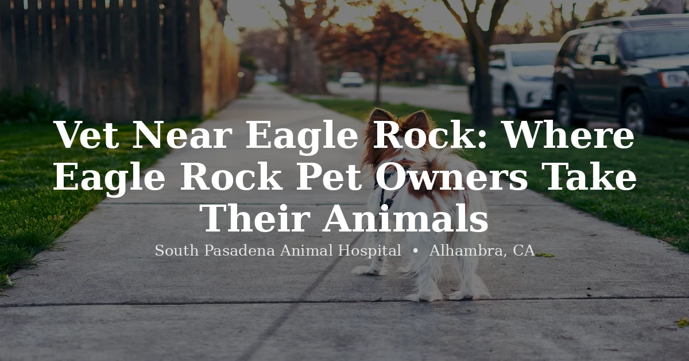

June 11, 2026 · 6 min read
Vet Near Eagle Rock: Where Eagle Rock Pet Owners Take Their Animals

Eagle Rock sits in a bit of a gap. It's close enough to Pasadena and Glendale that you'd think a great vet would be right around the corner — but a lot of Eagle Rock pet owners end up driving farther than they'd like, or settling for whatever's closest rather than what's actually good. We hear this a lot from new clients: "I didn't know you were even an option until a neighbor mentioned it."
South Pasadena Animal Hospital is about ten minutes east of Eagle Rock via the 134 or the 2 — close enough to be a real option, far enough that you might not have thought to look this direction. Here's what Eagle Rock pet owners tend to want to know before making the switch.
Ten minutes, a few different ways to get there
The fastest route is the 134 east to the 2 south, exiting at Fair Oaks Avenue and heading south to Main Street — we're on the left, with street parking right outside. The 110 south from Eagle Rock through South Pasadena works too. And if you'd rather skip the freeway altogether, surface streets through Highland Park via York Boulevard or Figueroa Street get you here just as reliably, especially during commute hours when the freeway isn't actually faster.
Whether you're coming from Colorado Boulevard, the streets around Occidental College, Eagle Rock Plaza, or the neighborhoods near the Eagle Rock Recreation Center and Yosemite Drive, the drive is short enough to be a normal errand rather than a planned event.
What you actually get when you get here
We're a privately owned, full-service animal hospital — not a satellite location of a regional chain. That means in-house bloodwork and diagnostics, digital radiography, and soft-tissue surgery (spays, neuters, mass removals, and more) on-site, without referring routine cases elsewhere. Dr. Chiang and Dr. Navia have been running this practice since 2023, and they're still the ones examining your pet — not handing you off to whoever's available that day.
We also publish our pricing online. If you've ever left a vet visit with a bill that didn't match what you expected walking in, you'll understand why we think that matters.
Eagle Rock has more exotic pet owners than people realize
Between the older homes with big yards and a community that tends to lean into unconventional pet choices, Eagle Rock has a noticeably active population of reptile, bird, and small-mammal owners. The challenge is that a lot of general practices simply don't see exotics — which means an Eagle Rock household with a dog and a bearded dragon often ends up juggling two completely different vets in two different parts of the city.
We see reptiles (bearded dragons, geckos, turtles, snakes), birds (cockatiels, parrots, conures, finches), rabbits, guinea pigs, hamsters, and other small mammals — alongside dogs and cats, all under one roof. Exotic appointments are currently open to new patients. Book here or call (626) 441-1314.
Senior pets need a vet who knows their history
If you've got an older dog or cat, continuity matters more than almost anything else. A vet who's seen your pet over several years notices the small shifts — a slightly different gait, a slightly duller coat — that someone meeting your pet for the first time might miss entirely. That's part of why we think it's worth establishing care with a practice you intend to stick with, rather than bouncing between whichever clinic has the soonest opening.
What the first visit should feel like
A good first appointment isn't rushed. It includes a real conversation about your pet's history, a full physical exam, a clear walkthrough of what was found, and a plan with costs explained up front — not after the fact. If you leave an appointment with a clear sense of what's going on and what happens next, that's the sign you've found the right fit. If you leave more confused than when you arrived, that's worth paying attention to.
Questions we hear often
What is the closest vet to Eagle Rock?
South Pasadena Animal Hospital at 3116 W Main St in Alhambra is about ten minutes east of Eagle Rock via the 134 or 2 freeway — one of the closest full-service practices to the neighborhood. We offer comprehensive care for dogs, cats, and exotic pets with pricing published online.
What's the best route from Eagle Rock to SPAH?
Take the 134 east to the 2 south, exit at Fair Oaks Avenue, and head south to Main Street — street parking is available right out front. The 110 south through South Pasadena works too, and surface streets through Highland Park via York Boulevard or Figueroa Street are a solid backup during commute hours.
Does SPAH see exotic pets for Eagle Rock residents?
Yes — and exotic appointments are open to new patients. We see reptiles, birds, rabbits, guinea pigs, hamsters, and other small mammals. Book a vet appointment and let us know your pet's species so we can prepare.
What should I look for in a vet near Eagle Rock?
Proximity, in-house diagnostics, transparent published pricing, independent ownership, and whether the practice sees your type of pet. It also helps to read recent reviews for the specific veterinarian you'd be seeing, not just the practice as a whole.
Is SPAH accepting new patients from Eagle Rock?
Yes — we're now accepting new patients, including dogs, cats, and exotic pets. Book through our online portal or call (626) 441-1314.